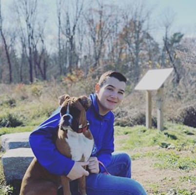

I am a 14 year old residing in Medfield, Massachusetts. I have no prior paid work experience but, there are many things that will make me a valuable asset to the company. First off, I am a strong and confident leader. I work well both independently and with others. I work hard -- and when I am faced with a challenge, I conquer it. Lastly, I will always complete a task to the best of my ability, without question.
I am currently in the 9th grade. I began my schooling in Staten Island, New York. I went to Our Lady Help of Christians School, up until the 3rd grade. I have been in the Medfield Public School System since. Over the past 6 years, I have acquired many achievements and experience. I have consistently maintained good grades in school. I enjoy learning and challenging myself academically. I particularly enjoy the sciences and mathematics. I was an honors biology student this year and am going to be an honor physics student next year. I have also taken a computer science and culinary class to expand upon what I believe to be necessary skills for someone my age. My leadership qualities are also recognized and used in the school environment. I was selected by the principal of Medfield High School, through recommendation of previous teachers and staff, to be on his student-led advisory board. I am joined by 2 classmates and 3 students from each of the other grades above me. I will hold this position for all 4 of my years at Medfield High School. I plan to continue to pursue academic excellence and expand my knowledge and love for learning whenever possible.
I have always enjoyed the idea of serving others within my community and across the nation. As a U.S. Naval Sea Cadet, I have had many opportunities to assist others. I have worked alongside the U.S. Navy and Coast Guard to host events, perform memorial services, and bring relief to communities that need it during times of disaster or struggle.
Some other extracurricular activities I take part in are:
Along with helping others, I better myself by playing hockey at a competitive level for a majority of the year. Having played on a team since a young age, I have gained valuable teamwork and leadership skills.
Hockey, being an incredibly fast game, was almost impossible for me to play due to my vision. I was born blind in my left eye. I can see blurry shadows and some color out of it. The absence of vision in my left eye took away my depth perception, field of view, and made it very dangerous to play some sports. Despite this challenge and wanting to quit, I persevered and made it to a high school level of hockey. I have taught myself to function so well with ½ of my vision that very little people know about. That is one of many examples of my determination to overcome challenges